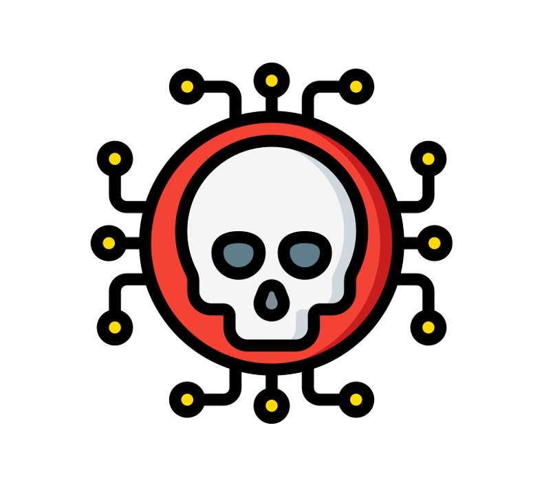
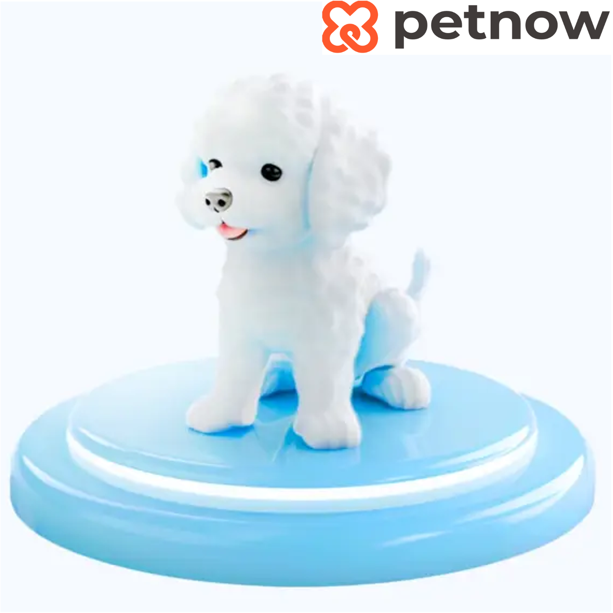
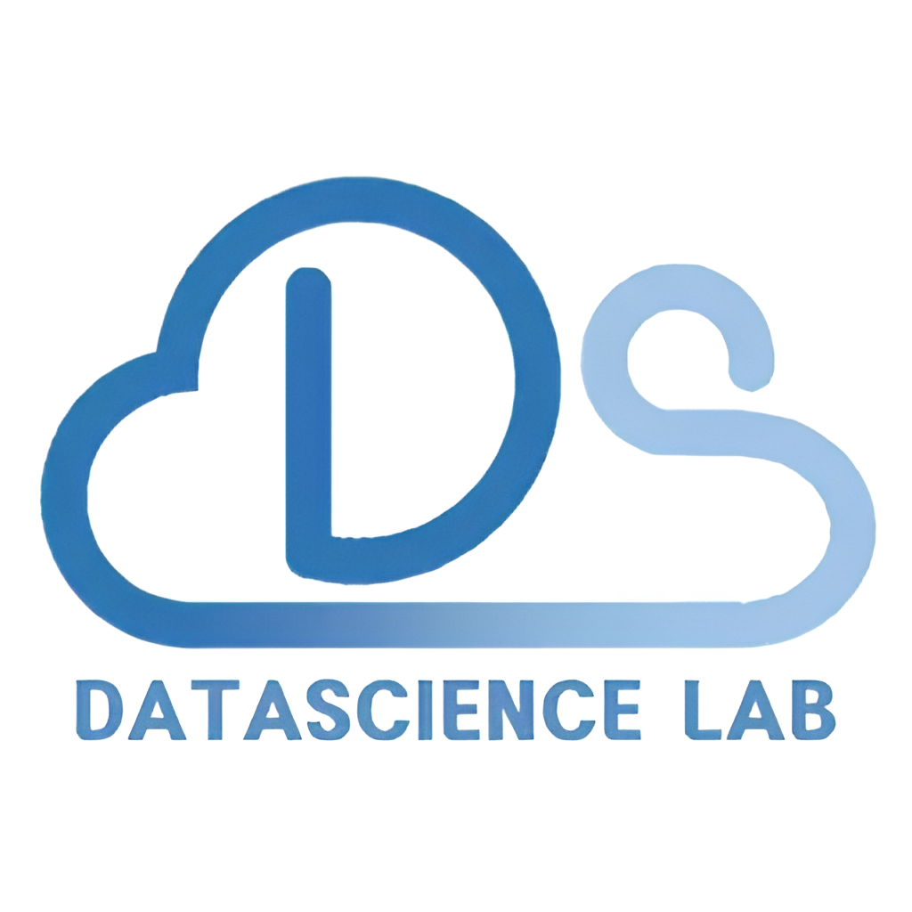

|
Jungwoo Kim
My name is Jungwoo Kim.
I am a M.S./Ph.D student at the MCML Group, under the supervision of Prof.
Prof. Jong-Seok Lee.
I have a broad interest in various research areas that utilize machine learning and computer vision.
Especially, I'm currently interested in image compression for machine (ICM) and Diffusion Models.
Email /
CV /
Google Scholar /
LinkedIn /
Github
Open to any collaboration opportunities across related research topics!
|

|
Recent News
-
2026.02.
✈️ Attending IPIU 2026 held in Jeju, Korea.
-
2026.01.
🔥 Newly joined MAAP Lab at MODULAB. I'm now expanding my research to Music AI!
-
2025.12.
📝 A new preprint PICM-Net is now released!
-
2025.09.
✈️ Attending MMSP 2025 held in Beijing, China. I'm going to present my work CSAT!
-
2025.08.
📝 One paper accepted at MMSP 2025!
-
2025.08.
✈️ Attending KCCV 2025 held in Busan, Korea.
-
2025.03.
🔥 Joined MCML Group at Yonsei University as an Integrated M.S./Ph.D student.
-
2025.02.
✈️ Attending KICS Winter Conference 2025 held in Pyeongchang, Korea.
-
2025.01.
✈️ Attending IEIE Winter Workshop on Image Understanding held in Hongcheon, Korea.
-
2024.12.
🔥 Newly launched my homepage!
|
Education
Yonsei University, Seoul, Republic of Korea
M.S./Ph.D student in School of Integrated Technology
Mar. 2025 - Present
Yonsei University, Seoul, Republic of Korea
B.S. in School of Integrated Technology (GPA: 3.95 / 4.30)
Mar. 2022 – Feb. 2025
* One year early graduation.
|
Research Interests
My primary research goal is to understand how deep learning models work and to utilize them in various research areas, especially in computer vision.
So my primary research interest just lies in various topics about machine learning and computer vision, covering my goal.
Currently, I'm interested in Image Compression for Machine, Diffusion Models, Explainable AI, etc. In the past, I have also studied Graph Neural Network (GNN), Reinforcement Learning (RL) and Natural Language Processing (NLP), especially about evaluating the performance of large language models.
|
Publications
P Preprints
C Conference Papers
J Journal Papers

|
P1
Progressive Learned Image Compression for Machine Perception
Jungwoo Kim, Jun-Hyuk Kim, Jong-Seok Lee
Arxiv Preprint
This paper proposes the first machine-oriented progressive learned image codec, PICM-Net, with machine-aware prioritizations and adaptive decoding controller to maintain the desired confidence of downstream machine vision tasks.
Our code will be available soon.
|
|

|
C2
Exploring Cross-Stage Adversarial Transferability in Class-Incremental Continual Learning
Jungwoo Kim, Jong-Seok Lee
The 27th IEEE International Workshop on Multimedia Signal Processing (MMSP 2025)
This paper investigates stage-transferred attacks in class-incremental continual learning (CSAT), showing that adversarial examples generated from earlier-stage models remain effective against later-stage models.
Our code is available at here.
|

|
C1
HAE-RAE Bench: Evaluation of Korean Knowledge in Language Models
Guijin Son, Hanwool Lee, Suwan Kim, Huiseo Kim, Jaecheol Lee, Je Won Yeom, Jihyu Jung, Jungwoo Kim, Songseong Kim
Proceedings of the 2024 Joint International Conference on Computational Linguistics, Language Resources and Evaluation (LREC-COLING 2024)
HAE-RAE Bench evaluates large language models' understanding of Korean culture, offering a challenge beyond traditional English-based benchmarks.
Our dataset is available at HAERAE-HUB.
|
|
Projects
|

|
Monocular Dog Body Length Estimation
This work is part of 24-2 Yonsei DSL Corporate Project supported by PetNow, Seoul AI Hub, and advised by Prof. Taeyoung Park.
Improving a dog body length estimation model. Based on pose estimation and depth estimation models, we improve 2d-to-3d transformation with camera intrinsic parameters.
Due to security issues, the materials cannot be disclosed.
|
|

|
Audio Sentiment Classification
This work is part of 24-1 Yonsei DSL Corporate Project supported by WesomE.
Developing a lightweight model (under 500MB) for recognizing emotions from speaker's voice data, focusing on feature augmentation through analyzing high-frequency details.
Due to security issues, the materials cannot be disclosed.
|

|
NextLevel: A Choreography Generation Model with Lyric Understanding
This work is part of 23-2 Software Project (IIT4204) with Jaeho Jin, Sangjoon Yeo, and advised by Prof. JeongGil Ko.
Integrating lyric understanding into group choreography generation model.
By incorporating text embedding into previous diffusion-based models, we generate lyric-aware dance motions.
Our materials aren't disclosed now.
|

|
Medical Image Super Resolution
Implementation of Low-Dose CT with a Residual Encoder-Decoder Convolutional Neural Network.
This work is a part of the internship in Medisys Lab, advised by Prof. Jongduk Baek.
The research focus on enhancing low-dose CT images by super-resolving them to match the quality of normal-dose images.
Additionally, as a follow-up study, we replaced the architecture with a U-Net to further evaluate the effectiveness in preserving details.
Our code is available here.
|
|
Honors and Awards
Best Project Award, 2024-2 DSL Modeling Project
2024-2 DSL Modeling Project Presentation (2024.09.24.) held by Yonsei Data Science Lab.
Topic: An Unified Framework for Group Choreography Dataset Collection
Certification, 4th LG Aimers/Data Intelligence
LG Aimers (Advancing AI for Young Talents): Online AI Education and Hackaton (2024.01.02. ~ 2024.02.26.) held by LG AI Research.
Excellence Award, 2023 Yonsei Medical Convergence Challenge
Yonsei Medical Convergence Challenge (2023.01.30. ~ 2023.01.31.) held by The Medical Scientist Training Program.
Our presentation is available here.
|
Academic Services
Reviewer
ICASSP 2026
|
Invited Talks
Learned Image Compression and Computer Vision
2025 Summer Alumni Seminar in Yonsei DSL - Aug 21, 2025
ML101: From Scratch to Deep Learning
2025 Summer Field Research with Incheon Academy of Science and Arts (IASA) - Jul, 2025
Diffusion: From DDPM to Stable Diffusion
25-1 Regular Session Speech in Yonsei DSL (video available here) - Mar 18, 2025
Normalizing Flow and Energy Based Model
24-2 Regular Session Speech in Yonsei DSL (video available here) - Sep 03, 2024
Mamba Review: Linear-Time Sequence Modeling with Selective State Spaces
24-2 Regular Session Speech in Yonsei DSL (video available here) - Aug 22, 2024
Life as a Researcher in Engineering
(Invited) Yeungnam High School, Daegu, Republic of Korea - Mar 16, 2024
|
Teaching Assistant
Understanding the World with Data (YCS1012)
Fall 2025
Advanced Mathematics 2 (IIT2102)
Spring 2025
Computational Thinking and SW Programming (YCS1001)
Fall 2025, Winter 2024, Fall 2024, Summer 2024, Spring 2024, Spring 2023
Mechatronics Project (IIT4312)*
Spring 2024
* Via tutoring program hosted by Yonsei University.
|
Miscellanea
MAAP Lab, Modulab
Senior Researcher (Jan. 2026 - Present)
MAAP (Music AI Assemble People!) Lab is a non-commercial research group at MODULAB, led by Junyoung Koh.
MAAP Lab focuses on advancing the foundations of Music AI through practical research, then sharing results openly with the community.
Yonsei Data ScienceLab
11th Regular Member (Dec. 2023 - Dec. 2024)
Head of Academic Team (Jun. 2024 - Dec. 2024)
Yonsei Data Science Lab (DSL) is a student community under the Department of Applied Statistics at Yonsei University, advised by Prof. Taeyoung Park.
Yonsei DSL focus on studying and applying various theories related to Data Science and Machine Learning, based on a statistical theory.
ElutherAI
Project Member (Sep. 2023 - Nov. 2023)
Eluther AI is a non-profit AI research lab founded in 2020. ElutherAI focuses on the interpretability and alignment of Large Language Models.
Yonsei Computer Club
Regular Member (Sep. 2022 - Aug. 2025)
Member of Friendship Team (Jul. 2024 - Dec. 2024)
Yonsei Computer Club (YCC), founded in 1970, is the only central computer club at Yonsei University. YCC brings together students with a shared interest in computers and supports a variety of academic activities.
Yonsei Engineering Student Council
Executive Member (Apr. 2022 - Nov. 2023)
Freshman Vice Representative (Mar. 2022 - Feb. 2023)
|
|
Last updated on Dec 24, 2025.
© 2025 Jungwoo Kim. All rights reserved. Design and source code adapted from
Jon Barron's website.
|
|